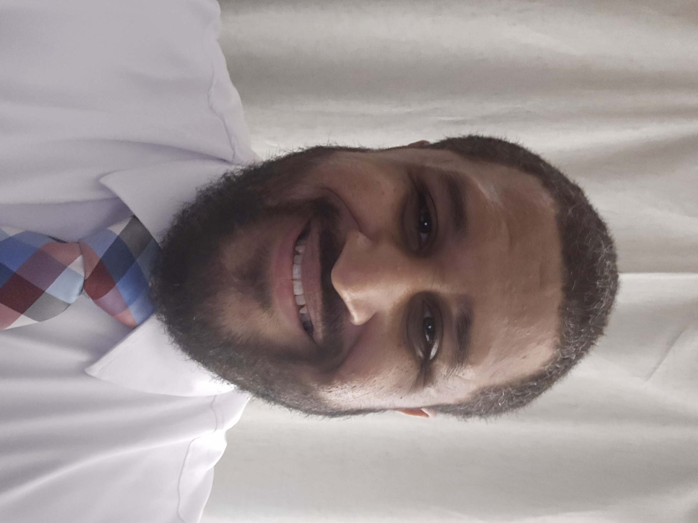

Reynerio Almonte Contreras
DevOps Engineer
Email: Reyalmonte89@gmail.com
Phone: 407-506-5471


Reynerio Almonte Contreras
DevOps Engineer
Email: Reyalmonte89@gmail.com
Phone: 407-506-5471
Career Summary
Detail-oriented and proactive aspiring DevOps professional with a strong foundation in software development, IT operations, and cloud infrastructure. Adept at collaborating with others while ensuring high-quality services and programs. Career history of training and supervising staff, promoting adherence to organizational policies and industry standards.
Areas Of Expertise
Project Management | Website Development | Agile | Programming Fundamentals | Software Development | QA/Testing Processes
Professional Experience
DELOITTE – Tampa, FL
CMS DevOps – July 2024 – Present
VPNE PARKING SOLUTIONS – Orlando, FL
Valet Supervisor – Aug. 2020 – Present
SUNCOAST PREMIER MEDICAL – Clermont, FL
Medical Assistant – May 2016 – May 2017
Education & Training
FLORIDA TECHNICAL COLLEGE – Orlando, FL
Associate's Degree – Medical Assistant – Jan. 2017
SCRUM ALLIANCE – Online
Certificate – Scrum Master Certification – May 2023
YEARUP – Online
Certificate – Application Development and Support – Jan. 2025
Year Up is a leading career development program with 250 corporate partners around the country; the program includes professional training and a professional internship. Completed coursework towards Application Development and Support credentials to adopt an understanding of skillsets and traits necessary to achieve success in a corporate environment.
Technical Skills
Proficient in MS Word, MS Excel, HTML, JavaScript, CSS, Jira, Git, Zoom, VSCode, WordPad++, SQL, MS
Teams, MS 365, Bootstrap
Repositories, CI/CD, Test Runs, Data Migrations, Containerization, Cloud Platforms, Security and
Compliance, Version Control